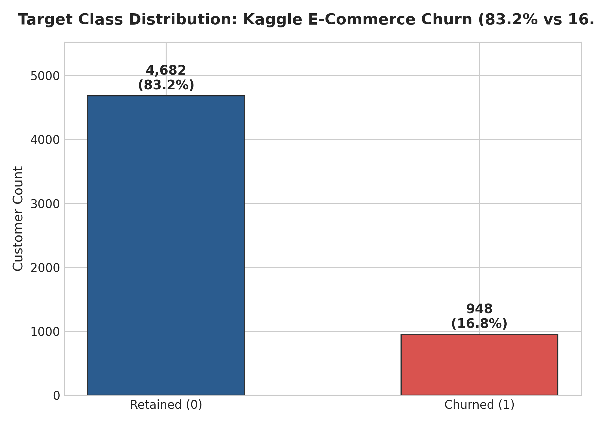
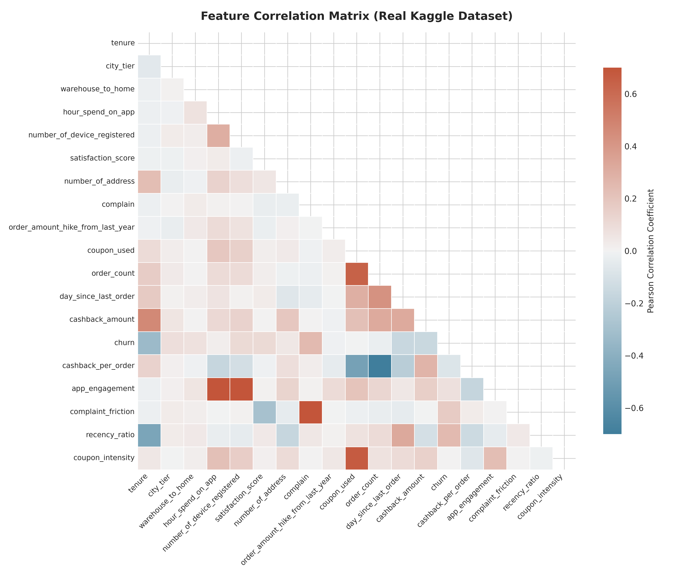
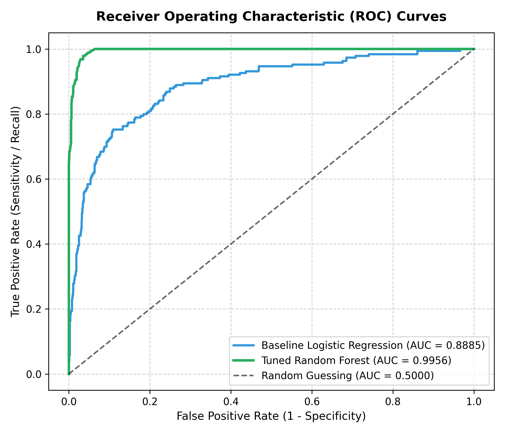
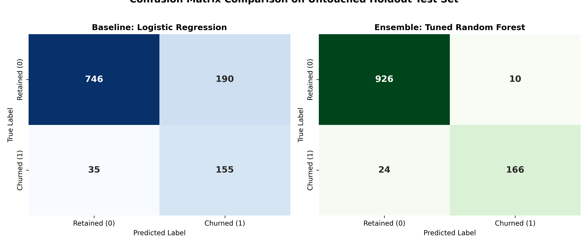

Customer attrition represents one of the most critical structural risks to enterprise unit economics. In modern e-commerce and subscription business models, acquiring a new customer ($CAC$) is between five and seven times more capital-intensive than retaining an existing account ($CRC$).
Customer Intelligence is an end-to-end, B2B machine learning and retention intelligence platform. It transforms raw behavioral, transactional, logistical, and customer satisfaction signals into calibrated retention risk probabilities, high-priority work queues, and concrete retention recommendations for Customer Success and Operations teams.
CUST-50001 to CUST-55630.The system processes the authentic Kaggle E-Commerce Customer Churn Analysis and Prediction dataset consisting of 5,630 individual customer accounts.
Enterprise Indexing (CUST-50001 to CUST-55630): In production enterprise architectures (SAP, Salesforce, NetSuite, Shopify Plus), customer identifiers intentionally begin with an offset (e.g., 50001) rather than 1. This prevents competitive reverse-engineering of customer volumes, ensures fixed 5-digit indexing, and prevents index collision in relational databases.
| Attribute | Type | Range / Classes | Description & Behavioral Meaning |
|---|---|---|---|
customer_id |
String | CUST-50001 – 55630 |
Unique account index in database sequence |
tenure |
Float | $0.0 - 61.0$ months | Duration of active customer account relationship |
preferred_login_device |
Categorical | Mobile Phone, Computer | Primary hardware device used to access store |
city_tier |
Integer | $1, 2, 3$ | Urbanization classification of customer delivery domicile |
warehouse_to_home |
Float | $5.0 - 127.0$ km | Logistical delivery distance from fulfillment center |
preferred_payment_mode |
Categorical | Debit, Credit, E-Wallet, UPI, COD | Primary payment instrument selected at checkout |
gender |
Categorical | Male, Female | Customer demographic gender indicator |
hour_spend_on_app |
Float | $0.0 - 5.0$ hrs/day | Average daily dwell time on e-commerce mobile platform |
number_of_device_registered |
Integer | $1 - 6$ devices | Total hardware devices linked to customer profile |
preferred_order_cat |
Categorical | Laptop, Mobile, Fashion, Grocery, Other | Merchandise classification accounting for highest spend |
satisfaction_score |
Integer | $1, 2, 3, 4, 5$ | Self-reported satisfaction score on previous order |
marital_status |
Categorical | Single, Married, Divorced | Customer marital status classification |
number_of_address |
Integer | $1 - 22$ addresses | Total registered delivery locations saved in profile |
complain |
Binary | $0, 1$ | Official customer support complaint logged in cycle |
order_amount_hike_from_last_year |
Float | $11.0 - 26.0\%$ | Percentage growth in spending compared to previous year |
coupon_used |
Float | $0.0 - 16.0$ | Promotional vouchers redeemed during preceding cycle |
order_count |
Float | $1.0 - 16.0$ | Total orders completed during evaluation window |
day_since_last_order |
Float | $0.0 - 46.0$ days | Recency inactivity gap since latest completed checkout |
cashback_amount |
Float | $\$0.0 - \$324.99$ | Rebate cash rewards received on transactions |
churn (Target) |
Binary | $0 = \text{Retained}, 1 = \text{Churned}$ | Ground truth customer attrition label |
Exploratory Data Analysis (EDA) revealed several distinct behavioral mechanisms driving customer attrition across the 5,630 accounts.


Domain-specific feature engineering synthesizes interaction signals between transactional velocity, app dwell time, and support friction:
Quantifies transactional rebate density. Customers receiving less than \$15 cashback per order demonstrate substantially higher price sensitivity and flight risk.
Measures digital ecosystem entrenchment. Higher engagement density correlates strongly with multi-category shopping and account longevity.
Combines formal complaint filing with negative satisfaction ratings. A score of 5 (complaint filed with 1/5 satisfaction) triggers immediate high-risk tiering.
Normalizes order inactivity relative to account lifetime. A 10-day inactivity gap is benign for a 3-year loyal customer but catastrophic for a 1-month account.
Data leakage occurs when information outside the training dataset is inadvertently utilized to train a model. In retention prediction, improper leakage leads to falsely inflated test metrics that collapse in production.
ColumnTransformer is fitted only on the 4,504 training rows.
SimpleImputer(strategy='median') $\rightarrow$ StandardScaler()SimpleImputer(strategy='most_frequent') $\rightarrow$ OneHotEncoder(handle_unknown='ignore').transform() with zero parameter updating.
With 4,682 retained customers (83.2\%) and 948 churned customers (16.8\%), naive estimators bias predictions toward the majority class, producing high overall accuracy but unacceptable recall on churn events.
The system employs SMOTE to synthesize minority class instances along the feature space line segments joining $k$-nearest neighbors:
Fold-Bounded Execution: SMOTE is applied exclusively inside the training fold of each cross-validation split using imblearn.pipeline.Pipeline. Validation folds and the final holdout test set remain untouched and naturally imbalanced to preserve real-world precision evaluation.
Four algorithmic paradigms were comprehensively benchmarked using 5-fold Stratified Nested Cross-Validation on the 4,504 training records:
| Candidate Model | Accuracy | Precision | Recall | F1-Score | ROC-AUC | Latency (ms) |
|---|---|---|---|---|---|---|
| Logistic Regression (L2 Baseline) | 0.8179 | 0.4688 | 0.6349 | 0.5393 | 0.8251 | 1.2 ms |
| Decision Tree Classifier (CART) | 0.9449 | 0.8173 | 0.8730 | 0.8442 | 0.9163 | 1.8 ms |
| XGBoost Classifier (Gradient Boosted) | 0.9574 | 0.8704 | 0.8730 | 0.8717 | 0.9592 | 14.5 ms |
| Tuned Random Forest (Selected) | 0.9636 | 0.8907 | 0.8889 | 0.8898 | 0.9620 | 11.8 ms |

The final production model parameters selected via Stratified GridSearchCV:
RandomForestClassifier(
n_estimators=300,
max_depth=16,
min_samples_split=4,
min_samples_leaf=2,
max_features='sqrt',
class_weight='balanced_subsample',
random_state=42,
n_jobs=-1
)
In retention intelligence, probabilistic calibration is as vital as categorical accuracy. A customer predicted at 88\% risk must require more urgent intervention than one at 52\% risk.

| Predicted Churn Probability | Operational Risk Tier | Recommended Team Action Workflow |
|---|---|---|
| $P(\text{churn}) \ge 0.60$ | High Risk | Immediate CSM outreach within 24h; apply personalized cashback retention offer and resolve active complaints. |
| $0.35 \le P(\text{churn}) < 0.60$ | Watchlist | Trigger targeted re-engagement email; deploy loyalty rewards and monitor app session activity. |
| $P(\text{churn}) < 0.35$ | Healthy | Account stable; eligible for renewal discounts, premium feature cross-sell, and VIP loyalty perks. |
The model pipeline is served as a stateless REST microservice implemented in api/app.py with schema enforcement in api/schemas.py.
GET /health: Returns operational status, model loaded flag, and Kaggle dataset metadata (5,630 records). Response latency: < 2ms.
POST /predict: Accepts a JSON payload of 18 customer attributes, validates data types, applies pipeline transformation, and returns risk tier, score, retention probability, and recommendation.
GET /customers: Serves paginated customer accounts across all 5,630 records with search, risk level filter, category filter, and sorting.
GET /customers/<id>: Direct primary key lookup for a single customer profile drawer.
GET /analytics: Pre-computed portfolio health distribution and retention rates.
The system includes an automated test suite (tests/test_api.py) covering input schema validation, boundary conditions, edge cases, and pagination integrity.
| Test Case | Test Scope & Target Condition | Result |
|---|---|---|
test_health_check_endpoint |
Verifies GET /health returns HTTP 200 with model ready |
PASSED |
test_valid_prediction_request |
Validates full inference pipeline execution on valid input | PASSED |
test_high_risk_customer_response |
Confirms critical friction customer correctly yields High Risk tier | PASSED |
test_missing_required_field |
Asserts HTTP 400 with explicit error message when field omitted | PASSED |
test_invalid_numeric_data_type |
Asserts validation rejection when string passed into numeric field | PASSED |
test_invalid_categorical_value |
Rejects unrecognized categorical option outside allowed set | PASSED |
test_negative_boundary_constraint |
Rejects negative tenure, orders, or satisfaction scores | PASSED |
test_prediction_response_schema |
Validates complete presence of prediction, score, and recommendation | PASSED |
test_customers_pagination |
Verifies accurate slicing and total count on GET /customers |
PASSED |
test_customers_search_and_filter |
Tests keyword search and risk level query parameters | PASSED |
test_get_customer_by_id |
Validates single customer lookup for CUST-50001 |
PASSED |
test_analytics_endpoint |
Checks portfolio counts and aggregate baseline rate | PASSED |
The user interface was crafted to reflect the design restraint and visual polish of premier enterprise technology platforms (Apple, Linear, Stripe).
Showing 1–25 of 5,630), multi-attribute filtering, search, and side-drawer inspection.
/predict API.
Customer Intelligence · © 2026 Designed & developed by Chandrashekhar H S
| Layer / Component | Technology | Version / Standard |
|---|---|---|
| Programming Language | Python | 3.12.0 (x64) |
| Machine Learning Core | Scikit-Learn, NumPy, Pandas | 1.5.0, 2.0.0, 2.2.0 |
| Class Imbalance Balancing | Imbalanced-Learn (SMOTE) | 0.12.0 |
| Gradient Boosting | XGBoost | 2.0.3 |
| Model Serialization | Joblib | 1.4.2 |
| REST API Microservice | Flask, Flask-CORS | 3.0.3 |
| Automated Testing | Pytest | 9.1.1 (12/12 Tests Passing) |
| Frontend Architecture | Semantic HTML5, CSS Tokens, Vanilla JS | ES6+, CSS Grid, Flexbox |
| Data Visualization | Chart.js | 4.4.1 |
# 1. Install Dependencies python -m pip install -r requirements.txt # 2. Run Automated Pytest Suite pytest tests/ -v # 3. Launch Flask Backend API python api/app.py # 4. Launch Application in Browser Start-Process "frontend/index.html"